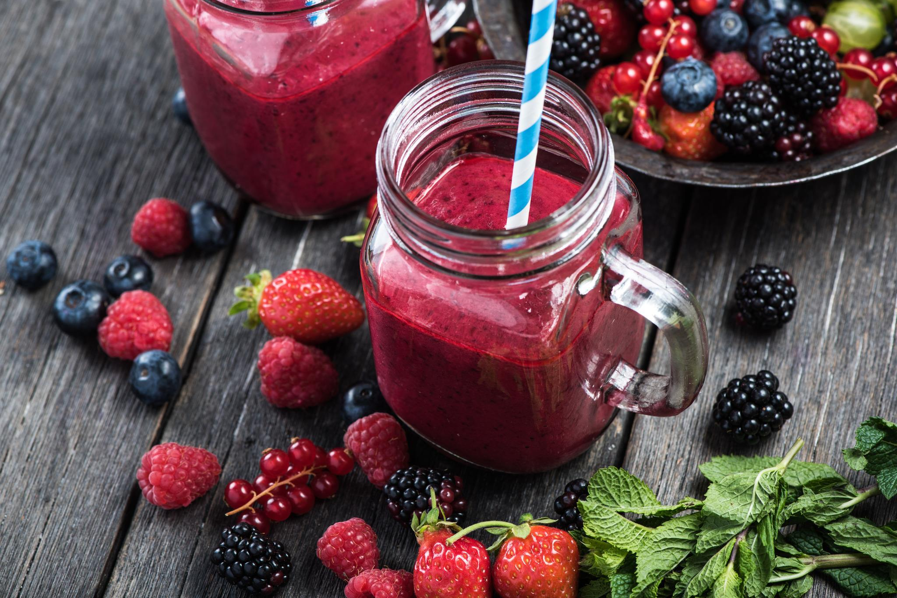

Benefícios de uma Alimentação Saudável
Manter uma alimentação equilibrada é essencial para garantir energia, bem-estar e prevenção de doenças. Alimentos naturais, ricos em fibras, vitaminas e minerais fazem toda a diferença no dia a dia.

Receitas Saudáveis

Salada de Quinoa
Leve, nutritiva e perfeita para o almoço.

Smoothie Detox
Feito com frutas vermelhas, iogurte e chia.